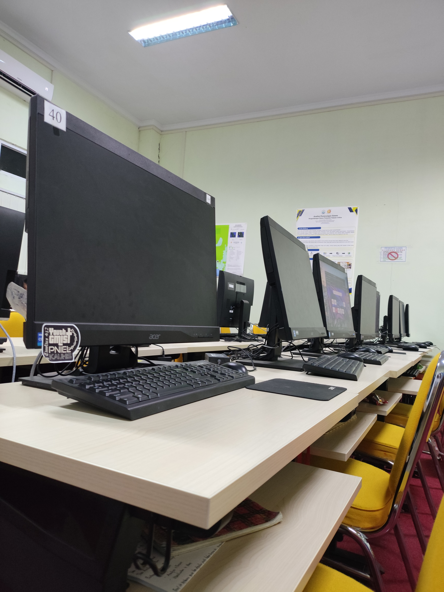
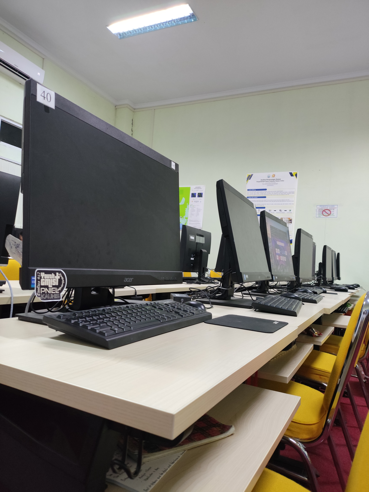

📌 Tentang Program Studi
Program Studi Sistem Informasi membekali mahasiswa dengan kemampuan merancang, mengelola, dan mengembangkan sistem informasi berbasis teknologi untuk mendukung kebutuhan organisasi dan industri.
🖥️ Fasilitas Laboratorium
 


📚 Mata Kuliah yang Dipelajari
- Dasar Pemrograman
- Algoritma dan Struktur Data
- Basis Data (MySQL)
- Sistem Informasi Manajemen
- Analisis & Perancangan Sistem
- Pemrograman Web
- UI / UX Design
- Jaringan Komputer
- Keamanan Sistem Informasi